<!DOCTYPE html>
<html lang="ml">
<head>
  <meta charset="utf-8">
  <meta name="viewport" content="width=device-width, initial-scale=1.0">
  <title>Pages 61-80 - Class 7 Social science</title>
  <style>

:root {
  --bg-color: #fcfcfd;
  --card-bg: #ffffff;
  --text-color: #1e293b;
  --text-muted: #64748b;
  --primary-color: #0284c7;
  --primary-light: #e0f2fe;
  --border-color: #e2e8f0;
  --radius: 10px;
  --shadow: 0 4px 6px -1px rgb(0 0 0 / 0.05), 0 2px 4px -2px rgb(0 0 0 / 0.05);
}

body {
  font-family: -apple-system, BlinkMacSystemFont, "Segoe UI", Roboto, "Noto Sans Malayalam", "Manjari", "Gayathri", sans-serif;
  background-color: var(--bg-color);
  color: var(--text-color);
  line-height: 1.8;
  font-size: 1.1rem;
  margin: 0;
  padding: 0;
}

.container {
  max-width: 860px;
  margin: 0 auto;
  padding: 2.5rem 1.5rem 5rem 1.5rem;
}

header {
  margin-bottom: 2.5rem;
  padding-bottom: 1.5rem;
  border-bottom: 2px solid var(--border-color);
}

.badge-row {
  display: flex;
  gap: 0.5rem;
  margin-bottom: 0.75rem;
  flex-wrap: wrap;
}

.badge {
  display: inline-block;
  font-size: 0.75rem;
  font-weight: 700;
  text-transform: uppercase;
  letter-spacing: 0.05em;
  padding: 0.25rem 0.65rem;
  border-radius: 9999px;
  background: var(--primary-light);
  color: var(--primary-color);
}

.badge-medium {
  background: #fef3c7;
  color: #b45309;
}

.badge-class {
  background: #dcfce7;
  color: #15803d;
}

h1 {
  font-size: 2.1rem;
  font-weight: 800;
  margin: 0.5rem 0 1rem 0;
  line-height: 1.3;
  color: #0f172a;
}

.nav-bar {
  display: flex;
  justify-content: space-between;
  margin: 1.5rem 0;
  font-size: 0.95rem;
  flex-wrap: wrap;
  gap: 0.5rem;
}

.nav-bar a {
  color: var(--primary-color);
  text-decoration: none;
  font-weight: 600;
  padding: 0.5rem 1rem;
  border-radius: var(--radius);
  background: var(--card-bg);
  border: 1px solid var(--border-color);
  transition: all 0.2s ease;
}

.nav-bar a:hover {
  background: var(--primary-light);
  border-color: var(--primary-color);
}

.nav-bar .disabled {
  color: var(--text-muted);
  pointer-events: none;
  border-color: transparent;
  background: transparent;
}

.page-section {
  background: var(--card-bg);
  border: 1px solid var(--border-color);
  border-radius: var(--radius);
  box-shadow: var(--shadow);
  padding: 2rem;
  margin-bottom: 2.5rem;
}

.page-header {
  display: flex;
  align-items: center;
  justify-content: space-between;
  margin-bottom: 1.25rem;
  padding-bottom: 0.5rem;
  border-bottom: 1px dashed var(--border-color);
}

.page-number {
  font-size: 0.8rem;
  font-weight: 700;
  text-transform: uppercase;
  color: var(--text-muted);
  letter-spacing: 0.05em;
}

.page-content p {
  margin: 0 0 1.25rem 0;
  white-space: pre-wrap;
  word-break: break-word;
}

.page-content p:last-child {
  margin-bottom: 0;
}

.diagram-card {
  margin: 2rem 0;
  text-align: center;
  background: #f8fafc;
  border: 1px solid var(--border-color);
  border-radius: var(--radius);
  padding: 1rem;
  overflow: hidden;
}

.diagram-card img {
  max-width: 100%;
  height: auto;
  border-radius: calc(var(--radius) - 4px);
  display: inline-block;
  box-shadow: 0 2px 4px rgba(0,0,0,0.04);
}

.diagram-card figcaption {
  font-size: 0.85rem;
  color: var(--text-muted);
  margin-top: 0.75rem;
  font-weight: 500;
}

footer {
  margin-top: 3rem;
  padding-top: 2rem;
  border-top: 2px solid var(--border-color);
}

  </style>
</head>
<body>
  <div class="container">
    <header>
      <div class="badge-row">
        <span class="badge badge-class">Class 7</span>
        <span class="badge badge-medium">Malayalam Medium</span>
        <span class="badge">Social science</span>
        <span class="badge">Part 1</span>
      </div>
      <h1>Pages 61-80</h1>
      <div class="nav-bar"><a href="part_1_pages_4160.html">← Pages 41-60</a><a href="index.html">☰ Index</a><a href="part_1_pages_81100.html">Pages 81-100 →</a></div>
    </header>
    <main>
<section class="page-section" id="page-61">
  <div class="page-header"><span class="page-number">Page 61</span></div>
  <figure class="diagram-card" id="fig_ch04_p061_01"><figcaption>Figure fig_ch04_p061_01 (Page 61)</figcaption></figure>
  <figure class="diagram-card" id="fig_ch04_p061_02"><figcaption>Figure fig_ch04_p061_02 (Page 61)</figcaption></figure>
  <figure class="diagram-card" id="fig_ch04_p061_03"><figcaption>Figure fig_ch04_p061_03 (Page 61)</figcaption></figure>
  <figure class="diagram-card" id="fig_ch04_p061_04"><figcaption>Figure fig_ch04_p061_04 (Page 61)</figcaption></figure>
  <figure class="diagram-card" id="fig_ch04_p061_05"><figcaption>Figure fig_ch04_p061_05 (Page 61)</figcaption></figure>
  <figure class="diagram-card" id="fig_ch04_p061_06"><figcaption>Figure fig_ch04_p061_06 (Page 61)</figcaption></figure>
  <figure class="diagram-card" id="fig_ch04_p061_07"><figcaption>Figure fig_ch04_p061_07 (Page 61)</figcaption></figure>
  <figure class="diagram-card" id="fig_ch04_p061_08"><figcaption>Figure fig_ch04_p061_08 (Page 61)</figcaption></figure>
  <figure class="diagram-card" id="fig_ch04_p061_09"><figcaption>Figure fig_ch04_p061_09 (Page 61)</figcaption></figure>
  <figure class="diagram-card" id="fig_ch04_p061_10"><figcaption>Figure fig_ch04_p061_10 (Page 61)</figcaption></figure>
  <figure class="diagram-card" id="fig_ch04_p061_11"><figcaption>Figure fig_ch04_p061_11 (Page 61)</figcaption></figure>
  <figure class="diagram-card" id="fig_ch04_p061_12"><figcaption>Figure fig_ch04_p061_12 (Page 61)</figcaption></figure>
  <figure class="diagram-card" id="fig_ch04_p061_13"><figcaption>Figure fig_ch04_p061_13 (Page 61)</figcaption></figure>
  <figure class="diagram-card" id="fig_ch04_p061_14"><figcaption>Figure fig_ch04_p061_14 (Page 61)</figcaption></figure>
  <figure class="diagram-card" id="fig_ch04_p061_15"><figcaption>Figure fig_ch04_p061_15 (Page 61)</figcaption></figure>
  <div class="page-content">
    <p>e†œ‚››Æ†›ų§†œ‚››¢Ú§<br>61<br>‚š¡’ ¡sš}Ĺ›Ž›Úųe†‹“ڝ›ƀ§“š›Úž<br>“eښĹ§†š}sśƳe‹›†›ÚšÄȻœs¡‘ s›ĞŒš›Žų›Ƽ<br>ȻœsǪe‹›†Žcu¢ĹÚ§“Žų‚§¢Œš”Œš¡ųš›Žų–Œž—c<br>“›”Ǵ–›ă›Žų‚§|šť†š}sśÆe‹›†›ÚšÄ‚¡ų ‚œŽŒš†›ă<br>“}¢Ú ŒŠš›Ƴˆ‹šuŝc |ādžš}scs‘›Úšť¢ˆš›ĞĬ§<br>ŒÚŧ†š}scs‘›Ú¢Ơš’š§m†›Ú§s¢Ƽ§s›Ğų‚§†š}sś¡ź<br>¢šu§ˆĚ‚œŽų‚›†Œ¢ƠpŽsƼ“ų§m¡ź Œtŝˆ‚›ă|šÄ<br>ˆ‚››Ƽm¡ź “š›ž¡}ŽÞcp’sųĬš›Žųˆ¢ä<br>pǮ ¢šu§¢ˆšc ¡‚Ǯs¢š ŒÚs¢š ¡xƭš¡‚<br>†š}sc ˆžÅśšÚ› Œ¢ĕŽ››Æ ¢ŒšÚŧ †š}sc<br>s‘›Ú¢ƠšÇ¢“„››Æ“ă‚¡ųm¡ų“…›Ú“š†ǫ<br>NJŒc†}ųpŽˆ¢äpŽe‹›¢†‚š“›†cgŎce†‹“c<br>iĬšsš†›}›Ƽ†š}scn‚šĬ§ˆs‚›¡Ĺ›¢ƀšÇm¡ź<br>‚ äDZŒšÚ›pŽ¡“}›Ĭ xœ›ƀšĚ“ų‹šuDZ¡Œų§<br>ˆ¡Ğ|šÄ¢šu§ˆĚ‚‚›Ž›ă‚›†šÆe‚§m¡ź<br>‚›Æs››ƼgŎśƳpŽˆš}§–c‹“āÇm†›Ú§<br>¢†Ž›¢}Ĭ›“ų›ĞĬ§gŎcƂ‚›–Ű›s¡‘šųc |ā¡‘ ‚‘ưś›Ƽ<br>eā¡†¡šųcf›•¡ ¢‚šƳƀ›ÚšÄs’››ƼÐ<br>-†›ƠžƱf›•<br>Ízœ“›‚Ĺ›†ceŽā›†cg}›ƳÎ¢ˆz§39-42
<br>ˆ<br>p<br>†<br>s<br>NJ<br>i<br>‚<br>ˆ<br>x›Ņc4.12<br>¢sŽ‘Ĺ›¡e›¡ƀ}ų †š}s–›†›ŒšƂ“ưĹsš†›ƠžÅf›•¡}<br>e†‹“ڝ›ƀ›Ƴ†›ųǫ ‹šuŒš›‚§<br>e“ÅÚ§m¡ŦƼǰ ¡“Ƽ“›‘›s‘š§–Œž—Ĺ›Æ†›ųc ¢†Ž›¢}Ĭ›“ų‚§?<br>sšŽ¡ŒŦ§ ?<br>ȻœsÇ sšƂ“ưņśÆ nÅ¡ƀ}ų‚§ “›Ú¡ƀĞ pŽ sšc †ƣ¡}<br>–Œž—Ĺ›Ĭš›Žųs›ƳŒšŅŒƼ–Œž—Ĺ›¡źˆ¢Œts‘›c Ȼœš‚<br>¡sšĬŒšŅceŽ›s“Ƴڎ›Ú¡ƀ}sc ‚DZš“–Žc†›¢•…›Ú¡ƀ}sc ¡xƪ<br>…šŽš‘ce†‹“āǪxŽ›ŅśƳsššÄs’›csš¢Œt“›„DZš‹DZš–¢Œt<br>¡‚š’›Ƴ¢Œtušư—›sg}āǪmų›“›}ā‘›Æe“Å‚š’§ųˆ„“›ŒšŅ¢Œ<br>eư—›Úųǫžmų ¡‚Ǯš…šŽ –Œž—Ĺ›Æ†›†›ų›Žų<br>ˆ¡ĹšƠ‚ǰ †žǮšĬ›Æ Ȼœs‘¡} e“sš”Ĺ›†c<br>”šÞœsŽĹ›†Œš›Ƃ“ưśăgŦDZ›¡ –šŒž—›s<br>ˆŽ›•§sưŚڑ›ÆƂ…š†¡ƀĞ“DZޛ“›…“s‘¡}“›„DZš‹DZš–“c<br>¢äŒ“cƂ…š†Ƃ“ưņ¢Œtš›ŽųgŦDZ›¡ Ȼœs‘¡}<br>e“Ǚ¡s›ă§ ˆ~›Úsc ƂLjāǪ ˆŽ›—Ž›Úšť ¢“Ĭ<br>Ƃ“ưņāǪÚ§¢†Ķ‚Ǵc †Ƴssc ¡xƪ<br>ˆį›‚ ŽŒšŠš› (1858-1922)<br>x›Ņc4.13</p>
  </div>
</section>
<section class="page-section" id="page-62">
  <div class="page-header"><span class="page-number">Page 62</span></div>
  <figure class="diagram-card" id="fig_ch04_p062_01"><figcaption>Figure fig_ch04_p062_01 (Page 62)</figcaption></figure>
  <figure class="diagram-card" id="fig_ch04_p062_02"><figcaption>Figure fig_ch04_p062_02 (Page 62)</figcaption></figure>
  <figure class="diagram-card" id="fig_ch04_p062_03"><figcaption>Figure fig_ch04_p062_03 (Page 62)</figcaption></figure>
  <figure class="diagram-card" id="fig_ch04_p062_04"><figcaption>Figure fig_ch04_p062_04 (Page 62)</figcaption></figure>
  <figure class="diagram-card" id="fig_ch04_p062_05"><figcaption>Figure fig_ch04_p062_05 (Page 62)</figcaption></figure>
  <figure class="diagram-card" id="fig_ch04_p062_06"><figcaption>Figure fig_ch04_p062_06 (Page 62)</figcaption></figure>
  <figure class="diagram-card" id="fig_ch04_p062_07"><figcaption>Figure fig_ch04_p062_07 (Page 62)</figcaption></figure>
  <figure class="diagram-card" id="fig_ch04_p062_08"><figcaption>Figure fig_ch04_p062_08 (Page 62)</figcaption></figure>
  <figure class="diagram-card" id="fig_ch04_p062_09"><figcaption>Figure fig_ch04_p062_09 (Page 62)</figcaption></figure>
  <figure class="diagram-card" id="fig_ch04_p062_10"><figcaption>Figure fig_ch04_p062_10 (Page 62)</figcaption></figure>
  <figure class="diagram-card" id="fig_ch04_p062_11"><figcaption>Figure fig_ch04_p062_11 (Page 62)</figcaption></figure>
  <figure class="diagram-card" id="fig_ch04_p062_12"><figcaption>Figure fig_ch04_p062_12 (Page 62)</figcaption></figure>
  <figure class="diagram-card" id="fig_ch04_p062_13"><figcaption>Figure fig_ch04_p062_13 (Page 62)</figcaption></figure>
  <figure class="diagram-card" id="fig_ch04_p062_14"><figcaption>Figure fig_ch04_p062_14 (Page 62)</figcaption></figure>
  <div class="page-content">
    <p>–šŒž—Dz”šȼc<br>‹šuc 1<br>62<br>VII<br>¢sŽ‘Ĺ›¡ ‚¢njŽ››Æ<br>z†›ă“›”ǴƂ–›ŗš<br>––DZ”šȻč<br>¢sšƠގ›¡sŽ›Ơ§<br>u¢“• ¢sůśÆ<br>e‚DZÆˆš„† ¢”•›ǫ<br>–ÿŽ›†csŽ›Ơ§“›s–›ƀ›ă<br>¡ŠšĞš›ÚÆ–Å¡“q‰§<br>gŦDZ¡}f„DZ ÜÅ<br>z†Æ1977 ÆŽšzDZcˆŃNJœ<br>ˆŽǗšŽc†Æs›<br>f„Ž›ă<br>g¡szš†s›eƣšÇ<br>(1897 - 1984)<br>gŦDZÄ–Å“sš”šsÇ<br>ȻœsÇÚ§mcŠ›Š›m–§<br>Ƃ¢“”†c†ÆsšĹ‚›†šÆ<br>Ĭ螁›¢“’§–›Ǯ››Æ†›ų§<br>e“ÅfŠ›Ž„csŽǙŒšÚ›<br>¢sŽ‘Ĺ›Æ£“„DZ”šȻśÆ<br>Š›Ž„c¢†}›f„DZ“†›‚<br>mų†››ÆƂ”ǘš›<br>‚›Ž“›‚ǰsžÅz›¢ǟǮœ“§<br>s­Ã–››¡f„DZ“†›‚š<br>Ƃ‚›†›…›š›Žų<br>¢šˆųĐž¢Úš–§<br>(1886-1976)<br>x›Ņc4.14<br>x›Ņc4.15<br>ȻœsÇڝˆ¢ŒğšÄ–§¡zÄÅ“›‹šuښŽc›cuˆ„“›“›¢“x†ce†‹“›ÚųĬ§<br>ğšť–§¡zťÅ (Transgender)<br>ğšÄ–§¡zÄÅ“DZޛmųšÆz††–ŒĹ§f“DZޛڧ†Æs››<br>Нǫ ›cuˆ„“›Œš›¡ˆšŽĹ¡ƀ}šĹ “DZޛmųš§eьš<br>ڝų‚§g‚›ÆğšÄ–§ˆŽ•†cğšÄ–§ȻœciÇ¡ƀ}c<br>Clause (K) of Section 2, TPPR Act, 2019)<br>†Dzž†ˆäc (Minority)<br>¡ŒšĹcz†–ctDZ›ÆmĴśÆs“ǫ “›‹šuāǪmųeÅƒĹ›Æ<br>Ƃ¢šu›Úųˆ„c</p>
  </div>
</section>
<section class="page-section" id="page-63">
  <div class="page-header"><span class="page-number">Page 63</span></div>
  <figure class="diagram-card" id="fig_ch04_p063_05">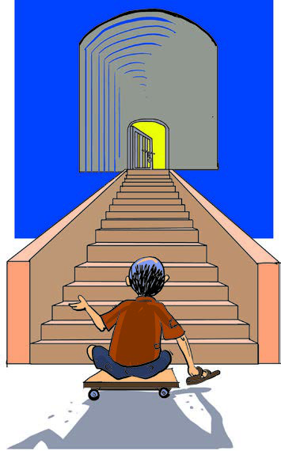<figcaption>Figure fig_ch04_p063_05 (Page 63)</figcaption></figure>
  <figure class="diagram-card" id="fig_ch04_p063_06"><figcaption>Figure fig_ch04_p063_06 (Page 63)</figcaption></figure>
  <figure class="diagram-card" id="fig_ch04_p063_07"><figcaption>Figure fig_ch04_p063_07 (Page 63)</figcaption></figure>
  <figure class="diagram-card" id="fig_ch04_p063_08">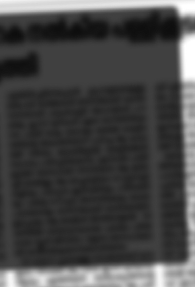<figcaption>Figure fig_ch04_p063_08 (Page 63)</figcaption></figure>
  <figure class="diagram-card" id="fig_ch04_p063_09"><figcaption>Figure fig_ch04_p063_09 (Page 63)</figcaption></figure>
  <div class="page-content">
    <p>x›Ņc†›Žœä›Úž<br>x›Ņc4.16<br>†ŒÚ§<br>xǮŒǫ ¢šsc<br>mƼš“ưڝc<br>pŽ¢ˆš¡<br>ƂšˆDZŒšsų¢Ĭš?<br>‚›Ž“†ŦˆŽc<br><br>gŽĞˆ}Åų<br>zœ“›‚¡Ĺ†›DŽ„šÅ€DZc¡sšĬ§¢†Ž›Ğ§<br>㚖§Œ››Æ¡“‘›ăcˆŽĹsš§<br>—Ǜc ¡‰Š›†cxâÚ¢–ŽpŽ<br>ˆŽ›Œ›‚›¡Ƽų§ ¡‚‘››ă§ ¡•ƨ§ǜ›<br>›¡†c ¡•Ƽ›¡¡Œš¡Ú Œ¢†š<br>—ŽŒš› ˆsÅų¡sš}Úsš§<br>‚›Ž“†ŦˆŽĹsšŽ›š”šŽ„š¢„“›<br>”šŽœŽ›sŒš¡“Ƽ“›‘›s¡‘e‚›zœ“›ă§<br>zœ“›‚ “›zc £s“Ž›ă h Œžų§<br>e…DZšˆ›sŒšŽc ‹›ų¢”•›ÚšÅÚ§<br>ŒšĶsš›Ž›Úų eˆžÅǁ¢Žšuc<br>Šš…›ă§xâÚ¢–Ž¡}–—šŒ›Ƽš¡‚<br>x›Úš†šsšĹ ”šŽ„š¢„“›ˆ~†Ĺ›Æ<br>mųc ŒÄ†›Ž›š›Žų¡‰Š›Ä<br>Œ›c¢zš–›†§ˆ‚›¢†’ǰ“Ǡ›š§<br>sš’§x †ǏŒš‚§sš’§x›Ƽš§Œ zœ“›‚<br>¢†Ğc£s“Ž›ÚšÄ‚}ǠŒ¡Ƽų§¡‚‘››ă<br>¡—Ä¡sƼš§¡‰Š›¡ź —œ¢š<br>¡†}Œāš}§ e’œ¢Úš}§ –Ǵ¢„”›š<br>—ǛƩ§<br>ˆ‚›¡†šų“Ǡ“¡Ž<br>sš’§xĬš›Žų s}cŠĹ›¡ź<br>ˆ›Ŧ¢š¡}š§<br>ˆ~†Ĺ›Æ<br>Œ›}Ú›s‘š Œž“Žc ˆŽ›Œ›‚›sÇ<br>Œ›s}ų§ –ÅښÅ ¢sš¢‘zs‘›Æ<br>e…DZšˆsŽš›–Å“œ–›ÆƂ¢“”›ă‚§<br>gĄš”Þ›¡} “›zc<br>e†œ‚››Æ†›ų§†œ‚››¢Ú§<br>63</p>
  </div>
</section>
<section class="page-section" id="page-64">
  <div class="page-header"><span class="page-number">Page 64</span></div>
  <figure class="diagram-card" id="fig_ch04_p064_01"><figcaption>Figure fig_ch04_p064_01 (Page 64)</figcaption></figure>
  <figure class="diagram-card" id="fig_ch04_p064_02"><figcaption>Figure fig_ch04_p064_02 (Page 64)</figcaption></figure>
  <figure class="diagram-card" id="fig_ch04_p064_03"><figcaption>Figure fig_ch04_p064_03 (Page 64)</figcaption></figure>
  <figure class="diagram-card" id="fig_ch04_p064_04"><figcaption>Figure fig_ch04_p064_04 (Page 64)</figcaption></figure>
  <figure class="diagram-card" id="fig_ch04_p064_05"><figcaption>Figure fig_ch04_p064_05 (Page 64)</figcaption></figure>
  <figure class="diagram-card" id="fig_ch04_p064_06"><figcaption>Figure fig_ch04_p064_06 (Page 64)</figcaption></figure>
  <figure class="diagram-card" id="fig_ch04_p064_07"><figcaption>Figure fig_ch04_p064_07 (Page 64)</figcaption></figure>
  <figure class="diagram-card" id="fig_ch04_p064_08"><figcaption>Figure fig_ch04_p064_08 (Page 64)</figcaption></figure>
  <figure class="diagram-card" id="fig_ch04_p064_09"><figcaption>Figure fig_ch04_p064_09 (Page 64)</figcaption></figure>
  <figure class="diagram-card" id="fig_ch04_p064_10"><figcaption>Figure fig_ch04_p064_10 (Page 64)</figcaption></figure>
  <figure class="diagram-card" id="fig_ch04_p064_11"><figcaption>Figure fig_ch04_p064_11 (Page 64)</figcaption></figure>
  <figure class="diagram-card" id="fig_ch04_p064_12"><figcaption>Figure fig_ch04_p064_12 (Page 64)</figcaption></figure>
  <figure class="diagram-card" id="fig_ch04_p064_13"><figcaption>Figure fig_ch04_p064_13 (Page 64)</figcaption></figure>
  <figure class="diagram-card" id="fig_ch04_p064_14"><figcaption>Figure fig_ch04_p064_14 (Page 64)</figcaption></figure>
  <div class="page-content">
    <p>–šŒž—Dz”šȼc<br>‹šuc 1<br>64<br>VII<br>”šŽœŽ›s¡“Ƽ“›‘›sÇe‚›zœ“›ă§zœ“›‚“›zc¢†}›Œžų“DZޛs¡‘<br>–cŠŰ›ă“šưōš§Œs‘›Æ¡sš}Ĺ›Ž›Úų‚§<br>”šŽœŽ›s –“›¢”•‚Œžc –Œž—Ĺ›¡ ŒǮ§ z†“›‹šuā¡‘ e¢ˆä›ă§<br>†›‚DZzœ“›‚Ĺ›Ƴ“DZ‚DZǘŒš¡“Ƽ“›‘›sÇ¢†Ž›}ų“Žš§‹›ų¢”•›ǫ“ư<br>(Differently abled)ˆ‚Žc‹›ų¢”•›“›‹šuā‘Ĭ§q¢Žš“›‹šuc‹›ų¢”•›sÇڝc<br>–c‹“›ÚųeŽ›s“Ƴڎc“DZ‚DZǘ ‚ŽĹ›š§<br>”šŽœŽ›s䌂ǫ“ưÚ§<br>e†sž“c<br>ƂšˆDZ“Œš<br>Žœ‚››š§¡ˆš‚¢“ ¡sĞ›}āÇ–ĕšŽŒšưuāLjǘsāÇ<br>‚}ā›“¡š¡Ú Žžˆsƹ† ¡xƭ¡ƀĞ›Ž›Úų‚§ gŎc<br>g}ā‘›Ƴ ˆ‚Žc ”šŽœŽ›s¡“Ƽ“›‘›sÇ ¢†Ž›}ų“ưÚ§ m¡Ŧš¡Ú<br>‚ŽĹ›ǫ Šŗ›ŒĞs‘š§e†‹“›¢ÚĬ›“Žų‚§?ãšǠ›Ƴxưă¡xƭž<br>‹›ų¢”•›ÚšŽ¡}<br>e“sš”–cŽä†›Œc2016<br>‹›ų¢”•›ÚšÅÚ§<br>“›¢“x†<br>Ž—›‚“c ‚DZ‚›žų›‚Œš<br>–šŒž—›szœ“›‚ciƀ“ŽĹšť<br>†›“›Æ“ų†›Œc<br>‹›ų¢”•›ǫe‚§ǮsÇŒŇŽ›<br>ڝųeŦšŽšȸsš›sŒŇŽŒš<br>ˆšŽš›Ơ›s§–§1948 š§fŽc‹›ă‚§<br>ˆšŽš›Ơ›s§–§<br>“›¢“x†c‚}šÄ‹Žv}†<br>gŦDZÄ‹Žv}†š”›ƹ›„‘›‚Ž¡}–šŒž—DZŽšȸœiųŒ†Ĺ›†§¢“Ĭ›<br>”ÞŒš›Ƃ“ưśăgŦDZ›¡eŽ›s“ƳՂ“›‹šuā‘¡}ƂLjāÇ<br>‚¡ź Žx†s‘›ž¡}e“‚Ž›ƀ›Úsce“ÅÚ§†›ŒˆŽŒš–cŽäc<br>–š…DZŒšsų‚›†§¢“Ĭ›†›¡sšǫsc ¡xƪ<br>¢šŠ›fƱec¢Š„§sÅ (1891-1956)<br>gŦDZÄ‹Žv}†mƼšˆ­ŽÅڝc ‚DZ‚iƀ§“ŽĹųe†¢Ą„c14
Œ‚c<br>“c”czš‚››cu¢‹„cz†›ăǙcmų›“¡}¢ˆŽ›Æš¡‚šŽ“›¢“x†“c<br>ˆš}›Ƽmų§‹Žv}†e†”š–›Úųe†¢Ą„c15
<br>mŦ¡sšĬš“ǰ†ƣ¡}‹Žv}† “›¢“x†ā¡‘ ˆžưŒšc†›¢Žš…›ă‚§ ?<br>z “›¢“x†āǪ–šŒž—›sˆ¢Žšu‚›¡ ‚}–¡ƀ}Ĺų</p>
  </div>
</section>
<section class="page-section" id="page-65">
  <div class="page-header"><span class="page-number">Page 65</span></div>
  <figure class="diagram-card" id="fig_ch04_p065_01"><figcaption>Figure fig_ch04_p065_01 (Page 65)</figcaption></figure>
  <figure class="diagram-card" id="fig_ch04_p065_02"><figcaption>Figure fig_ch04_p065_02 (Page 65)</figcaption></figure>
  <figure class="diagram-card" id="fig_ch04_p065_03"><figcaption>Figure fig_ch04_p065_03 (Page 65)</figcaption></figure>
  <figure class="diagram-card" id="fig_ch04_p065_04"><figcaption>Figure fig_ch04_p065_04 (Page 65)</figcaption></figure>
  <figure class="diagram-card" id="fig_ch04_p065_05"><figcaption>Figure fig_ch04_p065_05 (Page 65)</figcaption></figure>
  <div class="page-content">
    <p>e†œ‚››Æ†›ų§†œ‚››¢Ú§<br>65<br>z –šƠśse–Œ‚ǴcǔǏ›Úų<br>z –Žä›‚Œš‹­‚›s–š—xŽDZādž›¢•…›Úų<br>z<br>z<br>z<br>zš‚›“›¢“x†Ĺ›¡†‚›¡ŽgŦDz›Æ†›†›Æڝų †›Œā‘c<br>e†¢y„ā‘cn¡‚š¡Úš¡ų§s¡ĬśˆĞ›s “›ˆœsŽ›Ús<br>z ‹Žv}†e†¢y„c14, 15<br>z<br>z<br>z<br>ˆ¢Žšu‚›Ú§‚}–c†›Æڝų –šŒž—›s“DZ“ǙsLjŽ›Ǚ›‚›Žšȸœ<br>–šƠśsv}sāÇmų›“š§x› “›‹šuāÇeŽ›s“Æڎ›Ú¡ƀ}šÄ<br>sšŽŒšsų‚§<br>–Œž—Ĺ›¡ź“‘ưăƩc ‚DZ†œ‚›ǫ z†š…›ˆ‚DZ –Œž—Ĺ›¡ź†›†›ƹ›†c<br>mƼš“¢ŽcˆŽ›u›Úų –šŒž—›sš“Ǚe‚DZš“”DZŒš§mų§†›āÇ<br>Œ†Ǡ›šÚ›¢Ƽš.<br>mƽš“¡Žc ˆŽ›u›Úų –Œž—Ĺ›¡ź†›†›ƺ›†§f“”DzŒš<br>–šŒž—›sv}sāÇs¡ĬśˆĞ›s “›ˆœsŽ›ă¢†šÚDZ<br>z<br>‚DZ‚Ʃ§¢“Ĭ›ǫ sž}‚Ƴ†āÇ<br>z<br>“›¢“x†c‚}š†ǫ sž}‚Ƴ†›ŒāÇ<br>z<br>mƼš“ưڝc Œ›să“›„DZš‹DZš–c‹DZŒšÚÆ<br>z<br>¡‚š’›Ƴ¢Œts‘›Æ‚DZ‚iƀ§“ŽĹš†ǫ †}ˆ}›sÇ<br>z<br>z</p>
  </div>
</section>
<section class="page-section" id="page-66">
  <div class="page-header"><span class="page-number">Page 66</span></div>
  <figure class="diagram-card" id="fig_ch04_p066_01"><figcaption>Figure fig_ch04_p066_01 (Page 66)</figcaption></figure>
  <div class="page-content">
    <p>–šŒž—Dz”šȼc<br>‹šuc 1<br>66<br>VII<br>z†š…›ˆ‚DZâŒĹ›ÆmƼš“Ž¡}cˆÿš‘›Ĺciƀ“ŽĹ›šÆŒšŅ¢Œ<br>eŽ›s“Æڎc¡xÚ¡ƀ}sc ‚DZ†œ‚›ƂšˆDZŒš“sc ¡xƭsǫ<br>‚}ƱƂ“ÅņāÇ<br>z ¢zDZš‚›š“‰ž¡–š“›Ņ›Šš§‰ž¡¡ˆŽ›šÅec¢Š„§sÅ‚}ā›“¡Ž<br>s›ă§sž}‚Æ“›“ŽāÇ¢”tŽ›ă§vzœ“xŽ›Ņڝ›ƀ§‚ƭššÚž<br>eŽ›s“ÆՂe“Ǚ“›„DZš‹DZš–Ĺ›ž¡}Œ›s}ų sž}‚Æ“DZޛs¡‘<br>s›ăǫ “›“ŽāÇe…DZšˆsŽ¡}–—š¢Ĺš¡}s¡ĬŞ<br>zsšÅ•›ssš–ǰǗšŽ›s”šȻŽcuŧ¢ušŅz†‚¡}‚†‚§–c‹š“†sǪ<br>s¡Ĭś›z›ǮƳfƊc‚ƭššÚž<br>z¢ušŅz†‚¡}“š–Ǚc–ŭư”›ă§e“Ž¡}–šŒž—DZzœ“›‚cŒ†Ǡ›šÚž<br>h–žxsāǪiˆ¢šu›ÚŒ¢Ƽš<br><br><br>™ ˆžư“›sŽ¡}zœ“›‚c<br><br><br>™<br>sՕ›‹äc<br><br><br>™ –Œsš›szœ“›‚c<br><br><br>™<br>z“›¢“x†¡Ĺe‚›zœ“›ăȻœ†‹“āÇ“›“Ž›Úų zœ“xŽ›ŅcfŃsƒ<br>e†‹“ڝ›ƀsÇ mų›“ ǗžÇ £Ɩ››Ƴ †›ųc ˆŽ›–Ž¡Ĺ<br>“š†”šs‘›Ƴ†›ųc ¢”tŽ›ă§㚖›ÆpŽˆǘsƂ„ư”†c–cv}›ƀ›Úž<br>q¢Žš ˆǘs¡Ĺ s›ăc vs›ƀs‘c‚ƭššÚs<br>z‹›ų¢”•›ÚšŽ¡}¢äŒĹ›†š›Ƃ“ưśڝų “DZޛs¡‘Ǘž‘›Æ¢†Ž›¢Ğš<br>›z›ǮÆŒš…DZŒā‘›ž¡}¢šmśă§xưă–cv}›ƀ›Úž“›“›…¢Œts‘›Ƴ<br>‹›ų¢”•›ÚšÅ¢†Ž›}ųƂ‚›–Ű›sLjŽ›—šŽāÇmų›“¢xš„›ă›ž<br>z‹›ų¢”•›ÚšÅÚ§mƼš“¢Žc ¢ˆš¡mƼš›}ŝcmś¡ƀ}šť†›“›¡<br>–š—xŽDZśƳ m¡ŦƼǰ ŒšǮā‘š§ iĬš¢sĬ‚§? ‹›ų¢”•›ǫ<br>“›„DZšưĽ›s‘¡}‹­‚›s“ceښ„Œ›s“Œš–­sŽDZāÇių‚†›“šŽĹ›¢Ú§<br>iưŚťi‚sųpŽv¢Ƃšzܧ†›ā‘¡}ǗžÇˆŽ›–Ž¡Ĺ ŒÄ†›Åś<br>‚ƭššÚ›e…DZšˆsŽ¡}–—š¢Ĺš¡}‚¢Ŕ”–Ǵc‹ŽǙšˆ†Ĺ›Æ<br>–Œưƀ›Úž<br><br>™ “œƳ¡xÅšƠsÇ<br>™ £sƀ›}›sǪ</p>
  </div>
</section>
<section class="page-section" id="page-67">
  <div class="page-header"><span class="page-number">Page 67</span></div>
  <div class="page-content">
    <p>e†œ‚››Æ†›ų§†œ‚››¢Ú§<br>67<br><br>™ ¡Ɩ›Æ›ˆ›cq›¢š£Ɩ›c<br><br>™ ”šŽœŽ›s¡“Ƽ“›‘›–­Ǣ„”x›Œ›sǪ<br>z“›¢“x†ā¢‘š}§mā¡†š§Ƃ‚›sŽ›¢ÚĬ‚§#‚š¡’ˆųxư㚖žxsā¡‘<br>Œť†›ưś㚖›Æxưă†}Ş<br><br>™ eŽ›s“Ƴڎ›Ú¡ƀĞ“ư–ǴcŒ¢ųšĞ“Žc<br><br>™ eŽ›s“Ƴڎ›Ú¡ƀĞ“Ž¡}–š—xŽDZāÇ–Œž—Ĺ›¡źsžĞš<br><br><br>g}¡ˆ}sÇ¡sšĬ§‰Ƃ„Œš›ˆŽ›—Ž›Úš†š“c<br><br>™u“¡ĵź§–c“›…š†āÇiˆ¢šu›ă§ՂDZŒšg}¡ˆ}Ɔ}Ś“ų‚š§<br>sž}‚Ƴ–žxsāÇsžĞ›¢ăưڞ</p>
  </div>
</section>
<section class="page-section" id="page-68">
  <div class="page-header"><span class="page-number">Page 68</span></div>
  <figure class="diagram-card" id="fig_ch04_p068_01"><figcaption>Figure fig_ch04_p068_01 (Page 68)</figcaption></figure>
  <figure class="diagram-card" id="fig_ch04_p068_02"><figcaption>Figure fig_ch04_p068_02 (Page 68)</figcaption></figure>
  <figure class="diagram-card" id="fig_ch04_p068_03"><figcaption>Figure fig_ch04_p068_03 (Page 68)</figcaption></figure>
  <figure class="diagram-card" id="fig_ch04_p068_04"><figcaption>Figure fig_ch04_p068_04 (Page 68)</figcaption></figure>
  <div class="page-content">
    <p>|šÄ‹žŒ›<br>¢sš}›ÚÚ›†§“Å•āÇÚ§ŒƠ§xĞ¡ˆšǫųpŽ¢uš‘Œš›Žų|šÄ<br>ˆ›ųœ}§†›ŽŦŽc¡ˆƪŒ’›š§|šÄ‚Ĺ‚§ˆ›¢ųc„”äځڛ†§<br>“Å•āÇs’›Ě¢ƀš’š§zœ“zšāÇmų›ÆiĬš‚§–­Žžƒ÷—ā‘›Æ<br>mų›ÆŒšŅŒš§zœ“Ć›†›Æڝų‚§mų›šŒ¢Ƽš ? †›āÇÚ§zœ“›ÚšÄ<br>¢“Ĭ¡‚Ƽǰmų›Ĭ§”Ǵ–›ÚšÄ¢“Ĭ “šs}›Úš†c ŒǮ§f“”DZāÇڝŒǫ<br>zc––DZā‘¡}“‘ÅăƩ§e†›“šŽDZŒš ŒĴ§eā¡†mƼš¡ŒƼǰ<br>‹žŒ›¡}fŃu‚c“š›ă¢Ƽš ?<br>†ƣ¡}‹žŒ›<br>5<br>x›Ņc5.1</p>
  </div>
</section>
<section class="page-section" id="page-69">
  <div class="page-header"><span class="page-number">Page 69</span></div>
  <figure class="diagram-card" id="fig_ch04_p069_01"><figcaption>Figure fig_ch04_p069_01 (Page 69)</figcaption></figure>
  <figure class="diagram-card" id="fig_ch04_p069_02"><figcaption>Figure fig_ch04_p069_02 (Page 69)</figcaption></figure>
  <figure class="diagram-card" id="fig_ch04_p069_03">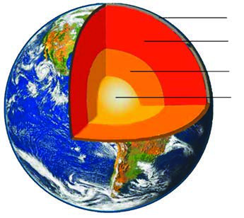<figcaption>Figure fig_ch04_p069_03 (Page 69)</figcaption></figure>
  <div class="page-content">
    <p>ˆ’s‘cŒs‘c‚š’§“Žs‘c–Œ‚ā‘¡ŒšÚš›‹žŒ›¡}iˆŽ›‚cmŅ<br>Œ¢†š—ŽŒš§!mųšÆ‹žŒ›¡}iǫ¢š?‹žŒ›¡}iǫ Ž—–DZā‘›¢Ú§<br>†Œ¡Úšų§s}ų¡xƼǰ<br>iǬs‘›¢Ú§<br>‹žŒ›¡} iˆŽ›‚Ĺ›¡ xž}›¡†Ú›ă§ †ŒÚ§ …šŽĬ¢Ƽš mųšÆ<br>iǫ›¡ xž}§e‚›s~›†Œš§iǫ¡} ¢sů‹šu¡Ĺ xž}§ns¢„”c5500<br>›÷›¡–Æ•DZ–§f§100›÷›¡–Æ•DZ–›š§¡“ǫc‚›‘Ʃsmų§<br>†›āÇڏ›šŒ¢Ƽš5500›÷›¡–Æ•DZ–§xž}§†›āÇÚ§–ÿƹ›Úš†šsų¢Ĭš?<br>†›āÇt†›sÇmų§¢sЛН¢Ĭš?e“›ÆnǮ“cf’Œǫt†›¡} ‚š’§xmŅ<br>s›¢šŒœǮÅf¡ų›š¢Œš ?ns¢„”c12 s›¢šŒœǮÅ!eŅ¢Ĺš‘c„žŽc¢ˆšc<br>Œ†•DZ†§¡x¡ųŚ†šsų‚§ũā‘¡}c –ŽäšiˆsŽā‘¡}c<br>–—š¢Ĺš¡}š§ns¢„”c6371 s›¢šŒœǮš§‹žŒ›¡} ¢sůś¢Úǫ<br>„žŽce¢ƀšÇ‹žŒ›¡}iǫ¡Ú›ăǫ “›“ŽāÇŒ†•DZ†§¢†Ž›Ğ¡xų§<br>Œ†–›šÚs –š…DZŒš¢š? ˆ›¡ųmā¡†š§‹žŒ›¡}iǫ¡Ú›ăǫ<br>“›“ŽādžŒÚ§‹›ă‚§? x› ”šȻœ ˆ~†ā‘¡}c †›uŒ†ā‘¡}c<br>e}›Ǚš†Ĺ›š§‹žŒ›¡}iǫ¡ –cŠŰ›ă“›“ŽāÇŽžˆ¡ƀЛНǫ‚§<br>e“m¡Ŧš¡Úš¡ų§¢†šÚǰ<br>z eõ›ˆÅ“‚¢ǝš}†ā‘›ž¡}‹žŒ›¡}iˆŽ›‚Ĺ›Æmś¢ăŽų“ǘÚÇ<br>ˆŽ›¢”š…›Úų‚›Æ†›ų§<br>z t†›s‘›Æ†›ų§¢”tŽ›Úų“›“Žā‘›Æ†›ų§<br>z ‹žsƠ–ŒĹ§iĬšsų‚Žcuā‘¡} x†c“›”s†c¡xƭų‚›Æ†›ų§<br>‹žŒ›¡}v}†<br>x›Ņc†›Žœä›Úž<br>‹žŒ›¡}iǫ¡Ú›ă§m¡Ŧš¡Ú<br>“›“Žā‘š§†›āÇÚ§Œ†–›šÚšÄ<br>–š…›Úų‚§ ?<br>†›ā‘¡} s¡ĬĹÆx“¡}<br>¢Žt¡ƀ}Ĺž<br>z<br>‹žŒ›¡}iǫ¡ “›“›…<br>ˆš‘›s‘š›‚›Ž›ă›Ž›Úų<br>z<br>nǮ“c ˆ¢Œǫ ˆš‘›š§<br>‹ž“ÆÚc(Crust).<br>z<br>‹žŒ›¡} “›“›… ˆš‘›sÇ n¡‚š¡Úš¡ų§ ‚›Ž›ă›Ě¢Ƽš? <br>†Æs››Ğǫ x›Ņc(5.3) †›Žœä›ăc “›”„œsŽc“š›ăc‹žŒ›¡}<br>iǫ¡ƀǮ›ǫ sž}‚Æ“›“ŽāÇ¢”tŽ›ă§s›ƀ§‚ƭššÚž<br>‹ž“ÆÚc<br>Œšź›Æ<br>ˆÚšƠ§<br>esښƠ§<br>x›Ņc5.2<br>†ƣ¡}‹žŒ›<br>69</p>
  </div>
</section>
<section class="page-section" id="page-70">
  <div class="page-header"><span class="page-number">Page 70</span></div>
  <figure class="diagram-card" id="fig_ch04_p070_01">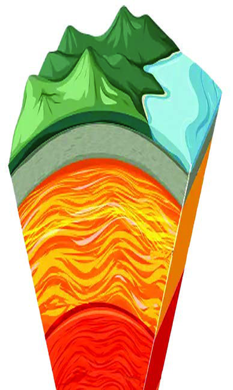<figcaption>Figure fig_ch04_p070_01 (Page 70)</figcaption></figure>
  <figure class="diagram-card" id="fig_ch04_p070_02">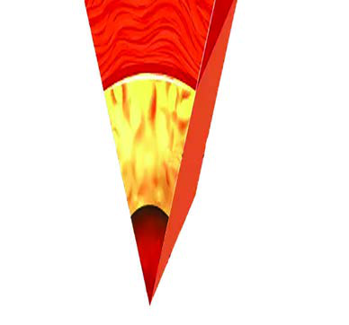<figcaption>Figure fig_ch04_p070_02 (Page 70)</figcaption></figure>
  <div class="page-content">
    <p>‹ž“ÆÚc (Crust)<br>‹žŒ›¡}nǮ“c ˆ¢Œǫ‚c ‚šŽ‚¢ŒDZ†<br>¢†ÅłŒš<br>ˆš‘›š§ ‹ž“ÆÚc<br>tŽŽžˆĹ›ǫ ˆšs‘šÆ†›Åƣ›‚Œš§<br>hˆš‘›<br>‹ž“ÆÚś†§“ÄsŽ‹ž“ÆÚc–Œŝ‹ž<br>“ÆÚc mų›ā¡† ŽĬ§ ‹šuā‘Ĭ§<br>“ÄsŽ‹ž“ÆÚś†š§s†csž}‚Æ<br>”Žš”Ž›s†c 30 s›¢šŒœǮ¢š‘c“Žc<br>“ÄsŽ‹ž“ÆÚś†§ˆÅ“‚Ƃ¢„”ŧ<br>ns¢„”c70 s›¢šŒœǮÅs†ŒĬ§mųšÆ<br>–Œŝ‹ž“ÆÚś†§”Žš”Ž›5 s›¢šŒœǮš§<br>s†c<br>Œšź›Æ(Mantle)<br>‹ž“ÆÚś†§ ‚š¡’ǫ<br>‹šuŒš§<br>Œšź›Æ‚šŽ‚¢ŒDZ† s†Œǫ ‹šuŒš›‚§<br>g‚§ ns¢„”c 2900 s›¢šŒœǮÅ “¡Ž<br>“DZšˆ›ăs›}ڝų<br>‹ž“Æړc<br>Œšź››¡ź iˆŽ›‹šu“c<br>¢xÅųǫ ‹šu¡Ĺš§ ”›šŒįc<br>(Lithosphere)mų§“›‘›Úų‚§”›šŒį<br>Ĺ›†§ ‚š¡’š› ”›šˆ„šÅĽāÇ<br>iŽs›Œšö
eŅŝ“š“Ǚ›Æsš<br>¡ƀ}ų‹šuŒš§eǘ¢†šǝ›ÅmųšÆ<br>eǘ¢†šǝ››†§‚š¡’ǫ ‹šuctŽš“<br>Ǚ›š§<br>sšƠ§ (Core)<br>Œšź››†§ ‚š¡’ǫ ‹šuŒš§ sšƠ§<br>sšƠ›†§ˆÚšƠ§esښƠ§mųœŽĬ§<br>‹šuā‘Ĭ§ˆÚšƠ§ŝ“š“Ǚ›c<br>esښƠ§ tŽš“Ǚ›Œš§ sšƠ§<br>ŒtDZŒšc †›ÚÆ(Ni)gŽƠ§(Fe)mųœ<br>¢š—ā‘šÆŽžˆc¡sšĬ‚š§e‚›†šÆ<br>sšƠ›†§†›¡‰ (NIFE)mųc ¢ˆŽĬ§<br>esښƠ›¡ xž}§ns¢„”c5500›÷›<br>¡–Æ•DZ–§f§<br>x›Ņc5.3<br>–šŒž—Dz”šȼc<br>‹šuc 1<br>70<br>VII</p>
  </div>
</section>
<section class="page-section" id="page-71">
  <div class="page-header"><span class="page-number">Page 71</span></div>
  <figure class="diagram-card" id="fig_ch04_p071_01"><figcaption>Figure fig_ch04_p071_01 (Page 71)</figcaption></figure>
  <figure class="diagram-card" id="fig_ch04_p071_02"><figcaption>Figure fig_ch04_p071_02 (Page 71)</figcaption></figure>
  <figure class="diagram-card" id="fig_ch04_p071_03">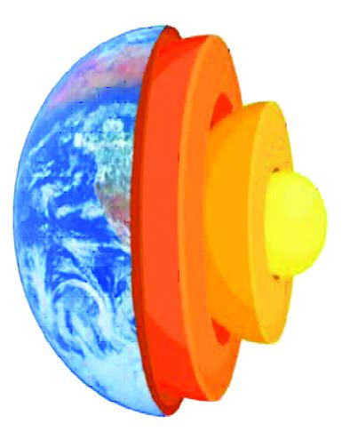<figcaption>Figure fig_ch04_p071_03 (Page 71)</figcaption></figure>
  <div class="page-content">
    <p>‹­ŒšŦŋšu¡Ĺq¢Žšˆš‘›¢}c –“›¢”•‚sÇiÇ¡ƀ}Ĺ›<br>‚ų›Ž›Úųf”ˆ}c(5.4) ˆžÅśšÚs<br>‹žŒ›¡}v}†–“›¢”•‚sÇ<br>‹ž“ÆÚc<br>nǯ“cˆ¢ŒǬ‹šuc<br>†›¡‰mų›¡ƀ}ų<br>‹ž“ÆÚś†‚š¡’<br>s›Œœ“¡ŽǬ‹šuc<br>Œšź›Æ<br>sšƠ§<br>‹žŒ›¡}iǫ¡}q¢Žšˆš‘›¢}c –“›¢”•‚sLjЛs›Æ†Æs››Ž›Úų<br>e“›Æ”Ž›š“¡} ¢†¡ŽÍ<br>Îmųc ¡‚Ǯš“¡} ¢†¡ŽÍ<br>Îmųc<br>“Žă¢xÅڞ<br>z‹žŒ›¡}nǮ“c ˆ¢Œǫ ”›š†›Åƣ›‚Œšiƀǫ ‹šuŒš§<br>‹ž“ÆÚc<br>z ‹ž“Æړc Œšź››¡źiˆŽ›‹šu“c ¢xÅų‚š§”›šŒįc<br>z ”›šˆ„šÅƒāÇŒšö
iŽs›eŅŝ“š“Ǚ›Æsš¡ƀ}ų<br>‹šuŒš§eǘ¢†šǝ›Å<br>z ˆÚšƠ§ŝ“š“Ǚ›š§<br>z “ÄsŽ‹ž“ÆÚc–Œŝ‹ž“ÆÚcmų›“‹ž“ÆÚś¡ź ŽĬ<br>‹šuā‘š§<br>z sšƠ›†§†›¡‰mųc ¢ˆŽĬ§<br>x›Ņc5.4<br>†ƣ¡}‹žŒ›<br>71</p>
  </div>
</section>
<section class="page-section" id="page-72">
  <div class="page-header"><span class="page-number">Page 72</span></div>
  <figure class="diagram-card" id="fig_ch04_p072_01"><figcaption>Figure fig_ch04_p072_01 (Page 72)</figcaption></figure>
  <figure class="diagram-card" id="fig_ch04_p072_02"><figcaption>Figure fig_ch04_p072_02 (Page 72)</figcaption></figure>
  <figure class="diagram-card" id="fig_ch04_p072_03"><figcaption>Figure fig_ch04_p072_03 (Page 72)</figcaption></figure>
  <figure class="diagram-card" id="fig_ch04_p072_04"><figcaption>Figure fig_ch04_p072_04 (Page 72)</figcaption></figure>
  <div class="page-content">
    <p>pŽxšÅЛƋžŒ›¡}v}†x›ŅœsŽ›ă§q¢Žšˆš‘›ÚcƂ¢‚DZsc<br>†›c†Æs›–“›¢”•‚sÇm’‚›㚖›ÆƂ„Å”›ƀ›Úž<br>͋žŒ›¡}iǫ“›¢”•āÇÎmų”œÅ•sśÆe…›s“›“ŽāÇsž}›<br>iÇ¡ƀ}Ĺ›¢†šĞ§ˆǘsśÆs›ƀs¡‘’‚ž<br>‹žŒ›¡}iǫ¡Ú›ăǫƂšƒŒ›sŒš “ǘ‚sÇ¢Šš…DZŒš¢Ƽšg†›‹žŒ›¡<br>f“Žc ¡xƪ§Ǚ›‚›¡xƭųeŦŽœä¡Ĺڝ›ăǫx›“ǘ‚sdžŒÚ§<br>Œ†Ǡ›šÚšÄNJŒ›Úǰ<br>‹žŒ›¡}eŦŽœäc<br>zœ“zšāÇÚ§ †›†›ÆښÄ s’›ų Žœ‚››Æ ‹žŒ›c eŦŽœä“c<br>Œš›¡‚ā¡†?<br>i„§‹“–ŒĹ§xĞˆ’Ĺe“Ǚ›š›Žų‹žŒ›¢sš}š†¢sš}›“Å•āÇ<br>¡sšĬ§–š“…š†c ‚ĹhƂ⛍›ž¡}‹žŒ›¡}iǫ›Ĭš›Žų<br>“š‚sāLj¢ĹÚ§“ų<br>⢌‹žŒ›Ú§xǮc †›Ž“…›“š‚sā‘ǫ“š“›¡źpŽf“ŽŒĬš›‹žŒ›¡<br>f“Žc ¡xƭųh“š‚sˆ‚ƀš§eŦŽœäc––DZā‘¡}f“›Å‹š“¢Ĺš¡}<br>Ƃsš”–c¢Nj•‰Œš›eŦŽœäcqs§–›z†šÆ–ƠųŒš›<br>eŦŽœäśǫ“š‚sā‘š§£†ğzÄqs§–›zÄsšÅŠÃ¢šs§£–§<br>‚}ā›“h“š‚sāÇsž}š¡‚ŒǮ§“š‚sā‘c ¡ˆš}›ˆ}ā‘c zǰ”“c<br>iĬ§eŦŽœäśÆe}ā››Ğǫ“›“›… “š‚sāÇn¡‚š¡Úš¡ųc<br>e“mŅe‘“›Æsš¡ƀ}ų¡“ųc†ŒÚ§¢†šÚǰ<br>eŦŽœä–cŽx†(Composition of the Atmosphere)<br>‹­¢ŒšˆŽ›‚Ĺ›Æ†›ų§ˆ‚›†š›Ž¢Ĺš‘c s›¢šŒœǮÅiŽc “¡ŽeŦŽœäś¡ź<br>–šų›…DZŒĬ§mųšÆf¡seŦŽœä“š“›¡ź97 ”‚Œš†“cǙ›‚›¡xƭų‚§<br>‹­¢ŒšˆŽ›‚Ĺ›Æ †›ų§ ns¢„”c 29 s›¢šŒœǮÅ iŽc “¡Žš¡ų§<br>sÚšÚ¡ƀ}ųiŽc sž}¢Ŧšc “š‚sā‘¡}e‘“§sĚ“Žų<br>Œ†•DZ†c ŒǮ§ zœ“zšāÇڝc zœ““š“š qs§–›zÄ ––DZā‘¡}<br>†›†›Æƀ›†š“”DZŒš sšÅŠÃ¢šs§£–§mų›“‹›Úų‚§eŦŽœäśÆ<br>†›ųš§hŽĬ§“š‚sā‘š§‹žŒ››Æzœ“Ć›†›Åŝų‚›ÆŒtDZ ˆÿ§<br>“—›Úų‚§<br>qs§–›zÄsšÅŠÃ¢šs§£–§mųœ“š‚sā¡‘ sž}š¡‚ŒǮ§n¡‚š¡Ú<br>“š‚sā‘š§eŦŽœäśǫ‚§? x›Ņc (5.5) †›Žœä›ă§s¡Ĭŝ<br>–šŒž—Dz”šȼc<br>‹šuc 1<br>72<br>VII</p>
  </div>
</section>
<section class="page-section" id="page-73">
  <div class="page-header"><span class="page-number">Page 73</span></div>
  <figure class="diagram-card" id="fig_ch04_p073_01">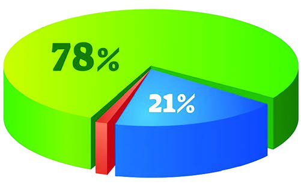<figcaption>Figure fig_ch04_p073_01 (Page 73)</figcaption></figure>
  <div class="page-content">
    <p>eŦŽœä“š‚sāÇ<br>x›Ņc5.5<br>£†ğzÄ<br>qs§–›zÄ<br>fÅuÃ<br>sšÅŠÃ¢šs§£–§<br>†›¢šÃ<br>—œ›c<br>⛈§¢ǮšÃ<br>–›¢†šÃ<br>£—ĦzÄ<br>1%<br>x›Ņc5.5 †›Žœä›ă§†Æs››Ğǫ ¢xš„DZāÇÚ§iŎcs¡ĬŞ<br>z<br>eŦŽœä“š“›ÆnǮ“c sž}‚ǫ “š‚scn‚š§ ?<br>z<br>£†ğz†cqs§–›z†c sž}›f¡seŦŽœä–cŽx†¡}mŅ”‚Œš†c<br>iǡښǫų ?<br>–žŽDZ‚šˆ¢ŒǮ§‹­¢ŒšˆŽ›‚Ĺ›Æ†›ųc zc†œŽš“›š›eŦŽœäś¡Ĺų<br>Ƃ⛍š§ŠšǒœsŽc(Evaporation)‹­¢ŒšˆŽ›‚Ĺ›Æ†›ų§ns¢„”c90<br>s›¢šŒœǮÅ“¡Ž ŒšŅ¢Œ zŠšǒś¡ź –šų›…DZŒǫž<br>“š‚sāÇz‚ŶšŅsÇmų›“Ʃ§ˆ¢Œ¡ˆš}›ˆ}ā‘ceŦŽœäś¡ź<br>‹šuŒš§¡ˆš}›ˆ}āÇ–š…šŽš›sĬ“Žų‚§‹­¢ŒšˆŽ›‚Ĺ›¢†š}§<br>¢xÅųǫeŦŽœä‹šuā‘›š§eŦŽœäś¡ ¢†ÅĹ¡ˆš}›ˆ}ā¡‘xǮ›<br>eŦŽœä†œŽš“›v†œ‹“›ă§¢ŒvāÇŽžˆ¡ƀ}ųe‚›†šÆeŦŽœäś¡<br>¢†ÅĹ¡ˆš}›ˆ}ā¡‘v†œsŽŒÅƣāÇ(Hygroscopic nuclei) mų“›‘›Úų<br>n¡‚š¡Ú ŒšÅíā‘›ž¡}š§eŦŽœäśÆ¡ˆš}›ˆ}āÇmŝų¡‚ų§<br>¢†šÚǰ<br>z<br>sšǮ›ž¡}‹žŒ››Æ†›ų§iÅĹ¡ƀ}ų“<br>z<br>eõ›ˆÅ“‚ā‘›ž¡} ˆĹ“Žų“<br>z<br>iÆÚsÇsŝų‚›ž¡}iĬšsųxšŽc<br>z<br><br><br>‹žŒ››¡zœ“zšā‘¡} †›†›Æƀ›†§eŦŽœäcmā¡†¡ƼǰƂ¢šz†<br>¡ƀ}ų¡“ų§¢†šÚž<br>z<br>sšš“ǙšƂ‚›‹š–āÇÚ§sšŽŒšsų<br>z<br>—š†›sŽā‘š –žŽDZŽlj›s‘›Æ†›ų§–cŽä›Úų<br>z<br><br>†ƣ¡}‹žŒ›<br>73</p>
  </div>
</section>
<section class="page-section" id="page-74">
  <div class="page-header"><span class="page-number">Page 74</span></div>
  <figure class="diagram-card" id="fig_ch04_p074_01"><figcaption>Figure fig_ch04_p074_01 (Page 74)</figcaption></figure>
  <figure class="diagram-card" id="fig_ch04_p074_02"><figcaption>Figure fig_ch04_p074_02 (Page 74)</figcaption></figure>
  <figure class="diagram-card" id="fig_ch04_p074_03"><figcaption>Figure fig_ch04_p074_03 (Page 74)</figcaption></figure>
  <figure class="diagram-card" id="fig_ch04_p074_04"><figcaption>Figure fig_ch04_p074_04 (Page 74)</figcaption></figure>
  <figure class="diagram-card" id="fig_ch04_p074_05"><figcaption>Figure fig_ch04_p074_05 (Page 74)</figcaption></figure>
  <figure class="diagram-card" id="fig_ch04_p074_06">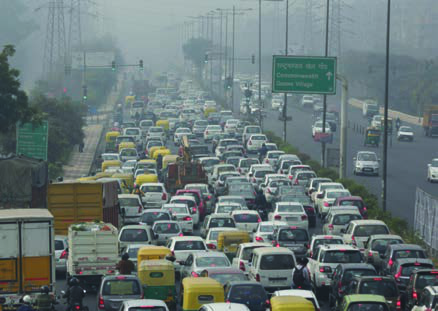<figcaption>Figure fig_ch04_p074_06 (Page 74)</figcaption></figure>
  <figure class="diagram-card" id="fig_ch04_p074_07"><figcaption>Figure fig_ch04_p074_07 (Page 74)</figcaption></figure>
  <figure class="diagram-card" id="fig_ch04_p074_08"><figcaption>Figure fig_ch04_p074_08 (Page 74)</figcaption></figure>
  <figure class="diagram-card" id="fig_ch04_p074_09"><figcaption>Figure fig_ch04_p074_09 (Page 74)</figcaption></figure>
  <figure class="diagram-card" id="fig_ch04_p074_10"><figcaption>Figure fig_ch04_p074_10 (Page 74)</figcaption></figure>
  <figure class="diagram-card" id="fig_ch04_p074_11"><figcaption>Figure fig_ch04_p074_11 (Page 74)</figcaption></figure>
  <figure class="diagram-card" id="fig_ch04_p074_12"><figcaption>Figure fig_ch04_p074_12 (Page 74)</figcaption></figure>
  <figure class="diagram-card" id="fig_ch04_p074_13"><figcaption>Figure fig_ch04_p074_13 (Page 74)</figcaption></figure>
  <figure class="diagram-card" id="fig_ch04_p074_14"><figcaption>Figure fig_ch04_p074_14 (Page 74)</figcaption></figure>
  <div class="page-content">
    <p>‹žŒ››Æzœ“Ć›†›Åŝų‚›Æ‚š¡’ƀųq¢Žšv}s“c<br>mā¡†¡Ƽǰ–—šsŒšsųmų§m’‚›¢†šÚž<br>eŦŽœä“š<br>eŦŽœäś¡<br>zǰ”c<br>eŦŽœäś¡<br>¡ˆš}›ˆ}āÇ<br>zœ“zšā‘¡}†›†›Æƀ›†§eŦŽœäś†ǫƂš…š†DZcmŅ “‚š¡ų§<br>Œ†Ǡ›š›¢Ƽdz?eā¡†ǫeŦŽœäc Œ›†Œššǫe“Ǚ¡Ú›ă§pų§<br>x›Ŧ›ă¢†šÚž<br>mā¡†¡š¡Úš§eŦŽœäc Œ›†Œšsų‚§?<br>eŦŽœäc Œ›†Œšsųe“Ǚn‚§¢ˆŽ›Æe›¡ƀ}ų?<br>eŦŽœä“š“›¡ź–cŽx†Ʃ§ŒšǮc “ŽĹųŽœ‚››Æˆsc“›•“š‚sā‘c<br>ŒǮ§Žš–ˆ„šÅƒā‘c “š“›ÆsŽų‚š§eŦŽœäŒ›†œsŽc<br>x›ŅāÇ(5.6) †›Žœä›Úž<br>–šŒž—Dz”šȼc<br>‹šuc 1<br>74<br>VII</p>
  </div>
</section>
<section class="page-section" id="page-75">
  <div class="page-header"><span class="page-number">Page 75</span></div>
  <figure class="diagram-card" id="fig_ch04_p075_01">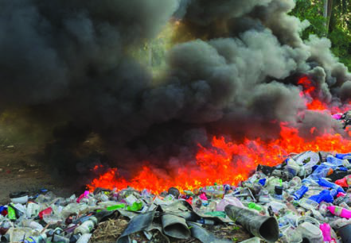<figcaption>Figure fig_ch04_p075_01 (Page 75)</figcaption></figure>
  <figure class="diagram-card" id="fig_ch04_p075_02"><figcaption>Figure fig_ch04_p075_02 (Page 75)</figcaption></figure>
  <figure class="diagram-card" id="fig_ch04_p075_03">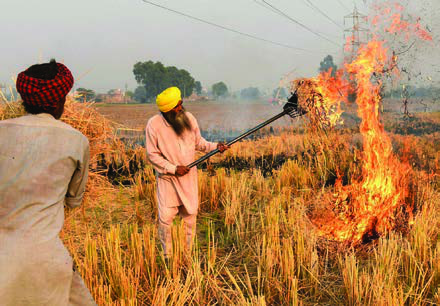<figcaption>Figure fig_ch04_p075_03 (Page 75)</figcaption></figure>
  <figure class="diagram-card" id="fig_ch04_p075_04">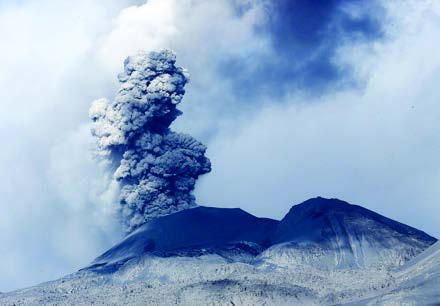<figcaption>Figure fig_ch04_p075_04 (Page 75)</figcaption></figure>
  <figure class="diagram-card" id="fig_ch04_p075_05"><figcaption>Figure fig_ch04_p075_05 (Page 75)</figcaption></figure>
  <figure class="diagram-card" id="fig_ch04_p075_06"><figcaption>Figure fig_ch04_p075_06 (Page 75)</figcaption></figure>
  <div class="page-content">
    <p>m¡ŦƼǰƂ“Åņā‘š§eŦŽœäŒ›†œsŽĹ›†§sšŽŒšsų‚§ ?<br>ˆĞ›s¡ƀ}Ĺs<br>z<br>z<br>z<br>“DZ“–š†uŽā‘›ÆeŦŽœäŒ›†œsŽĹ›¡ź¢‚š‚§sž}‚šsšÄsšŽ¡Œ<br>Ŧš§ ?<br>eƥŒ’<br>sÆڎ›¡ˆ¢ğš‘›cgۆāÇœ–Æ‚}ā›“sŝ¢ƠšÇ<br>sšÅŠÃ¢šs§£–§sšÅŠÃ¢Œš¢šs§£–§–ljÅ<br>¢šs§£–§‚}ā› †›Ž“…›š “š‚sāÇeŦŽœäśÆ<br>mŝųe“ Œ’¡“ǫ¢Ĺš¡}šƀcsÅų§¡“ǫś†§f–›§<br>–Ǵ‹š“c £s“ų§‹žŒ››¢¡ÚŝųŒ’ ¡“ǫś¡źpH ŒžDZc<br>5 Æs“š¡ÿ›Æe‚›¡†eƥŒ’š›sÚšÚc”ŗzĹ›¡ź<br>pH ŒžDZc 7f§<br>x›ŅāÇ5.6<br>†ƣ¡}‹žŒ›<br>75</p>
  </div>
</section>
<section class="page-section" id="page-76">
  <div class="page-header"><span class="page-number">Page 76</span></div>
  <figure class="diagram-card" id="fig_ch04_p076_01"><figcaption>Figure fig_ch04_p076_01 (Page 76)</figcaption></figure>
  <figure class="diagram-card" id="fig_ch04_p076_02"><figcaption>Figure fig_ch04_p076_02 (Page 76)</figcaption></figure>
  <figure class="diagram-card" id="fig_ch04_p076_03"><figcaption>Figure fig_ch04_p076_03 (Page 76)</figcaption></figure>
  <figure class="diagram-card" id="fig_ch04_p076_04"><figcaption>Figure fig_ch04_p076_04 (Page 76)</figcaption></figure>
  <figure class="diagram-card" id="fig_ch04_p076_05">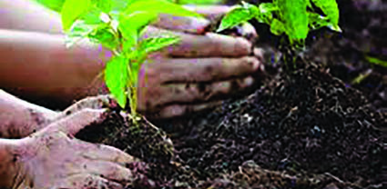<figcaption>Figure fig_ch04_p076_05 (Page 76)</figcaption></figure>
  <figure class="diagram-card" id="fig_ch04_p076_06"><figcaption>Figure fig_ch04_p076_06 (Page 76)</figcaption></figure>
  <figure class="diagram-card" id="fig_ch04_p076_07"><figcaption>Figure fig_ch04_p076_07 (Page 76)</figcaption></figure>
  <figure class="diagram-card" id="fig_ch04_p076_08"><figcaption>Figure fig_ch04_p076_08 (Page 76)</figcaption></figure>
  <div class="page-content">
    <p>ˆsc(smoke) Œž}ÆŒĚc<br>(fog) ¢xÅųš§ˆsŒĚ§<br>Žžˆ¡ƀ}s“DZ“–š”šsÇ<br>†›ÅƣšƂ“ÅņāÇ<br>“š—†āÇsšÅ•›s<br>“›‘s‘¡}e“”›ǏāÇ<br>sśÚÆ‚}ā›<br>Ƃ“Åņā‘›ž¡}iĬšsų<br>ˆsc¡ˆš}›ˆ}ā‘c<br>eŦŽœäśÆ†›ųg“<br>ŒĚŒš›sÅų§ˆsŒĚ§<br>Žžˆ¡ƀ}ųˆäšvš‚c<br>ˆsŒĚ§(Smog)<br>x›Ņc5.7<br>Ǣ¢ŝšuc”Ǵš–¢sš”¢ŽšuāÇmų›“ “Å…›ÚšÄ“šŒ›†œsŽc<br>sšŽŒšsų¡Ĭų§ˆˆ~†ā‘c xžĬ›Úš›Úų<br>eŦŽœäŒ›†œsŽcn¡‚š¡Ú“›…Ĺ›š§†}ڝų¡‚ųce“ǔǏ›Úų<br>¢„š•āÇm¡Ŧš¡Ú¡ųcŒ†Ǡ›š›¢Ƽdz ?<br>ˆ‚Ĭ§ˆŽ›—šŽāÇ<br>eŦŽœäŒ›†œsŽcp’›“šÚų‚›†š›†ŒÚ§m¡Ŧš¡Ú ¡xƭš†šsc?<br>x“¡}†Æs››Ğǫx›ŅāÇ(5.8) †›Žœä›Úžs¡Ĭ՝sÇs›ƀšÚ›<br>㚖›Æe“‚Ž›ƀ›Ús<br>x›ŅāÇ5.8<br>–šŒž—Dz”šȼc<br>‹šuc 1<br>76<br>VII</p>
  </div>
</section>
<section class="page-section" id="page-77">
  <div class="page-header"><span class="page-number">Page 77</span></div>
  <figure class="diagram-card" id="fig_ch04_p077_01">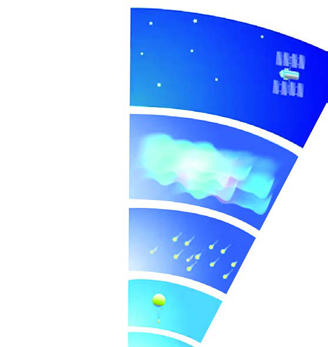<figcaption>Figure fig_ch04_p077_01 (Page 77)</figcaption></figure>
  <figure class="diagram-card" id="fig_ch04_p077_02"><figcaption>Figure fig_ch04_p077_02 (Page 77)</figcaption></figure>
  <figure class="diagram-card" id="fig_ch04_p077_03"><figcaption>Figure fig_ch04_p077_03 (Page 77)</figcaption></figure>
  <div class="page-content">
    <p>eŦŽœä–cŽx†¡Ú›ăš§†ƣÇg‚“¡Ž xÅă¡xƪ‚§<br>g†›eŦŽœäś¡źv}†mā¡†š¡ų§¢†šÚǰ<br>eŦŽœäv}†<br>‚šˆ“DZ‚DZš–Ĺ›¡źe}›Ǚš†Ĺ›ÆeŦŽœä¡Ĺeĕ§“DZ‚DZǘ ˆš‘›s‘š›<br>‚Žc‚›Ž›ă›Ž›Úųx“¡} †Æs››Ğǫ x›Ņc(5.9) †›Žœä›ă§eŦŽœäˆš‘›s¡‘<br>ˆĞ›s¡ƀ}Ĺs<br>¢ğš¢ƀšǝ›Å<br>–§ğš¢Ǯšǝ›Å<br>Œ›¢–šǝ›Å<br>¡‚Å¢Œšǝ›Å<br>ms§¢–šǝ›Å<br>x›Ņc5.9<br>†ƣ¡}‹žŒ›<br>77</p>
  </div>
</section>
<section class="page-section" id="page-78">
  <div class="page-header"><span class="page-number">Page 78</span></div>
  <figure class="diagram-card" id="fig_ch04_p078_01"><figcaption>Figure fig_ch04_p078_01 (Page 78)</figcaption></figure>
  <div class="page-content">
    <p>eŦŽœä ˆš‘›sÇ<br>z<br>¢ğš¢ƀšǝ›Å<br>z<br>z<br>z<br><br>z<br>eŦŽœäˆš‘›sÇn¡‚š¡Ú¡ų§s¡ĬśˆĞ›s¡ƀ}Ĺ›¢Ƽš?g†›e“<br>q¢Žšų›¡źc –“›¢”•‚sÇŒ†Ǡ›šÚǰ<br>¢ğš¢ƀšǝ›Å<br>eŦŽœäś¡źnǯ“c ‚š¡’Ǭˆš‘›š›‚§g‚›†§‹­¢ŒšˆŽ›‚Ĺ›Æ†›ų§<br>”Žš”Ž›13 s›¢šŒœǯÅ“¡ŽiŽc“Žcš“Ƃ¢„”ŧns¢„”c8 s›¢šŒœǯc<br>‹žŒ…Dz¢ŽtšƂ¢„”ŧ18 s›¢šŒœǯciŽŒšǬ‚§‹žŒ…Dz¢ŽtšƂ¢„”ŧxž}§<br>sž}‚š‚›†šš›‚§<br>¡ˆš}›ˆ}ā‘czŠšǓ“cnǯ“c sž}‚Æhˆš‘››šǬ‚§sž}š¡‚<br>¢ŒvŽžˆœsŽcŒ’ŒĚ§sšǯ§‚}ā›eŦŽœäƂ‚›‹š–ā‘c–c‹“›Úų‚§<br>hˆš‘››Æ‚¡ųš§<br>¢ğš¢ƀšǞ››¡źpŽƂ…š†–“›¢”•‚‹­¢ŒšˆŽ›‚Ĺ›Æ†›ų§q¢Žš 165 <br>ŒœǯÅiŽĹ›c 1›÷›¡–Æ•Dz–§mų¢‚š‚›ÆeŦŽœä‚šˆ†› sų<br>mų‚š§g‚›¡†⌌š ‚šˆ†ǐ†›ŽÚ§(Normal Lapse Rate)mų§“›‘›Úų<br>¢ğš¢ƀšǝ››¡†eŦŽœäś¡nǮ“cƂ…š†¡ƀĞ ˆš‘›mų§“›¢”•›ƀ›ÚšÄ<br>sšŽ¡ŒŦš§ ?<br>jĞ›ŒžųšÅ¡sš£}چšÆ‚}ā›iÅųƂ¢„”ā‘›Æ‚ƀ§e†‹“<br>¡ƀ}šÄsšŽ¡ŒŦš§ ?<br>–§ğš¢ǯšǞ›Å<br>¢ğš¢ƀšǞ››†§¡‚šĞŒs‘›ǬeŦŽœäˆš‘›š›‚§‹­¢ŒšˆŽ›‚Ĺ›Æ<br>†›ų§”Žš”Ž›50 s›¢šŒœǯÅ“¡Žš§iŽc–§ğš¢ǯšǞ››ÆpŽ†›Dž›‚<br>iŽcs’›¢ƠšÇ‚šˆc“Å…›ă“Žų‚š›sšDZ–§ğš¢ǯšǞ››š§<br>q¢–šÃˆš‘›Ǭ‚§g‚§iˆŽ›‚Ĺ›Æ†›ų§ns¢„”c25 s›¢šŒœǯÅ<br>iŽĹ›š§†›¡sšǬų‚§<br>q¢–šÃ‹žŒ›¡}Žäšs“xc<br>–žŽDZ†›Æ†›ųǫeˆs}sšŽ›s‘šeÇ𚓍Ǯ§Žlj›s¡‘‚}̝†›Åś<br>‹žŒ›¡ –cŽä›Úų‚§eŦŽœäś¡q¢–šÃ“š‚sā‘¡} –šų›…DZŒš§<br>eÇ𚓍Ǯ§Žlj›sÇ“Å…›ă¢‚š‚›Æ‹­¢ŒšˆŽ›‚Ĺ›Æˆ‚›ăšÆe‚§<br>zœ“zšāÇÚ§—š†›sŽŒšsscf“š–“DZ“Ǚ¡ ¢„š•sŽŒš›Šš…›Úsc<br>¡xƭc<br>–šŒž—Dz”šȼc<br>‹šuc 1<br>78<br>VII</p>
  </div>
</section>
<section class="page-section" id="page-79">
  <div class="page-header"><span class="page-number">Page 79</span></div>
  <figure class="diagram-card" id="fig_ch04_p079_01"><figcaption>Figure fig_ch04_p079_01 (Page 79)</figcaption></figure>
  <figure class="diagram-card" id="fig_ch04_p079_02"><figcaption>Figure fig_ch04_p079_02 (Page 79)</figcaption></figure>
  <figure class="diagram-card" id="fig_ch04_p079_03"><figcaption>Figure fig_ch04_p079_03 (Page 79)</figcaption></figure>
  <figure class="diagram-card" id="fig_ch04_p079_04"><figcaption>Figure fig_ch04_p079_04 (Page 79)</figcaption></figure>
  <figure class="diagram-card" id="fig_ch04_p079_05"><figcaption>Figure fig_ch04_p079_05 (Page 79)</figcaption></figure>
  <figure class="diagram-card" id="fig_ch04_p079_06"><figcaption>Figure fig_ch04_p079_06 (Page 79)</figcaption></figure>
  <figure class="diagram-card" id="fig_ch04_p079_07"><figcaption>Figure fig_ch04_p079_07 (Page 79)</figcaption></figure>
  <figure class="diagram-card" id="fig_ch04_p079_08"><figcaption>Figure fig_ch04_p079_08 (Page 79)</figcaption></figure>
  <figure class="diagram-card" id="fig_ch04_p079_09"><figcaption>Figure fig_ch04_p079_09 (Page 79)</figcaption></figure>
  <figure class="diagram-card" id="fig_ch04_p079_10"><figcaption>Figure fig_ch04_p079_10 (Page 79)</figcaption></figure>
  <figure class="diagram-card" id="fig_ch04_p079_11"><figcaption>Figure fig_ch04_p079_11 (Page 79)</figcaption></figure>
  <div class="page-content">
    <p>eÇ𚓍Ǯ§s›ŽāÇ‹žŒ››Æm¡ŦƼǰ¢„š•ā‘šĬšÚs ?<br>f—šŽǂct¡}‚sÅă<br>Օ›†š”c<br>––DZ“‘ÅăŒŽ}›ÚÆ<br>esš “šÅ…sDZc<br>eۂ‚›Œ›Žc<br>‚ǴڛĬšsųsDZšÄ–Å<br>eÇ𚓍Ǯ§<br>s›ŽāÇ<br>ǔǏ›Úš“ų<br>¢„š•āÇ<br>q¢–šÃ„›†c<br>mƼš“Å•“c ¡–ˆ§ǮcŠÅ16 ¢šsq¢–šÃ„›†Œš›fxŽ›ă<br>“Žųq¢–šÃ–cŽäĹ›¡źf“”DZs‚–cŠŰ›ă§z†ā‘›Æ<br>e“¢Šš…c iĬšÚs q¢–šÃ¢”š•Ĺ›†§ sšŽŒš¢Úš“ų<br>iƈųā‘¡}iˆ¢šuc†›ũ›Úsmų›“š§h„›†šxŽĹ›¡ź<br>äDZāÇ<br>q¢–šÃ„›†“Œš›ŠŰ¡ƀЧm¡ŦƼǰƂ“ÅņāÇ㚖›c<br>“›„DZšĹ›c †}Ĺǰ? xÅă¡xƭž<br>Œ›¢–šǝ›Å<br>–§ğš¢ǯšǞ››†Œs‘›Æns¢„”c50 s›¢šŒœǯÅŒ‚Æ80 s›¢šŒœǯÅ“¡Ž<br>“Dzšˆ›ă›Ž›ÚųeŦŽœäˆš‘›š›‚§hˆš‘››ciŽcsž}¢Ŧšc<br>‚šˆcsųƂ‚›‹š–ŒĬ§‹­¢ŒšˆŽ›‚Ĺ›Æ†›ų§ns¢„”c 80<br>s›¢šŒœǯÅiŽĹ›¡Ĺ¢Ơš¢’ڝc ‚šˆ†›£Œ†–§100 (-100)›÷›<br>¡–Æ•Dz–§“¡Ž‚š’ųeŦŽœäś¡nǯ“c sĚ ‚šˆ†›š§<br>g“›¡}e†‹“¡ƀ}ų‚§‹­ŒšŦŽœäś¢Ú§s}¡ųŝųiÆÚsÇ<br>Œ›Ú‚csś㚎Œšsų‚§hˆš‘››Æ“㚁§<br>†ƣ¡}‹žŒ›<br>79</p>
  </div>
</section>
<section class="page-section" id="page-80">
  <div class="page-header"><span class="page-number">Page 80</span></div>
  <figure class="diagram-card" id="fig_ch04_p080_01"><figcaption>Figure fig_ch04_p080_01 (Page 80)</figcaption></figure>
  <figure class="diagram-card" id="fig_ch04_p080_02"><figcaption>Figure fig_ch04_p080_02 (Page 80)</figcaption></figure>
  <figure class="diagram-card" id="fig_ch04_p080_03"><figcaption>Figure fig_ch04_p080_03 (Page 80)</figcaption></figure>
  <figure class="diagram-card" id="fig_ch04_p080_04"><figcaption>Figure fig_ch04_p080_04 (Page 80)</figcaption></figure>
  <figure class="diagram-card" id="fig_ch04_p080_05"><figcaption>Figure fig_ch04_p080_05 (Page 80)</figcaption></figure>
  <div class="page-content">
    <p>¡‚Å¢Œšǝ›Å<br>Œ›¢–šǞ››†§Œs‘›Æns¢„”c80 Œ‚Æ400 s›¢šŒœǯÅ“¡ŽiŽĹ›Æ<br>ǚ›‚›¡xƮųeŦŽœäˆš‘›š§¡‚Å¢ŒšǞ›ÅiŽcsž}¢Ŧšc‚šˆ†›<br>sž}›“Žų¡‚Å¢ŒšǞ››¡ź ‚š’§ų‹šu¡Ĺe¢šǞ›Åmų§“›‘›Úų<br>e¢šǞ›Å<br>eŦŽœäś¡źns¢„”c80Œ‚Æ400 s›¢šŒœǮÅ“¡ŽiŽĹ›Æ<br>eÇ𚓍Ǯ§ ms§–§ ¢ ‚}ā› ‚œƿ –žŽDZŽlj›sÇ “š‚s<br>‚ŶšŅs¡‘e¢šs‘šÚ›ŒšǮųhƂ⛍¡e¢šœsŽc<br>mųchƂ“Åņc†}ڝųŒį¡Ĺe¢šǝ›Åmųc<br>“›‘›Úųe¢šsÇÚ§£“„DZ‚›¡ s}ś“›}šÄs’›c<br>¢›¢š‚ŽcuāÇ£“„DZ‚sšŦ›s‚Žcuā‘š§e‚¡sšĬ§h<br>¢Œt ¢›¢š‚Žcuā‘¡} „œÅv„žŽƂ¢äˆc–š…DZŒšÚų<br>ms§¢–šǝ›Å<br>eŦŽœäś¡nǯ“c Œs‘›Ǭˆš‘›š›‚§s›¢šŒœǯ›†§Œs‘›Æ<br>ǚ›‚›¡xƮųms§¢–šǞ›ÅmųeŦŽœä ˆš‘››Æ“š‚ŶšŅs‘¡}<br>–šų›…Dzc⢌ sĚ§Š—›Žšsš”Ĺ›¡ź ‹šuŒš›Œšų<br>‹žŒ›¡}eŦŽœäv}†¡} –“›¢”•‚sÇiÇ¡ƀ}Ĺ›x“¡}<br>†Æs››Ğǫ ŒšĶs›Æ‚›Ž›ă›ÆsšÅ§‚ƭššÚs<br>eŦŽœäˆš‘›¡} ¢ˆŽ§<br><br>z ‹­¢ŒšˆŽ›‚Ĺ›Æ†›ųǫiŽc<br>z ‚šˆ†››ÆiĬšsųŒšǮc<br>z ŒǮ§–“›¢”•‚sÇ<br>–šŒž—Dz”šȼc<br>‹šuc 1<br>80<br>VII</p>
  </div>
</section>
    </main>
    <footer>
      <div class="nav-bar"><a href="part_1_pages_4160.html">← Pages 41-60</a><a href="index.html">☰ Index</a><a href="part_1_pages_81100.html">Pages 81-100 →</a></div>
    </footer>
  </div>
</body>
</html>
